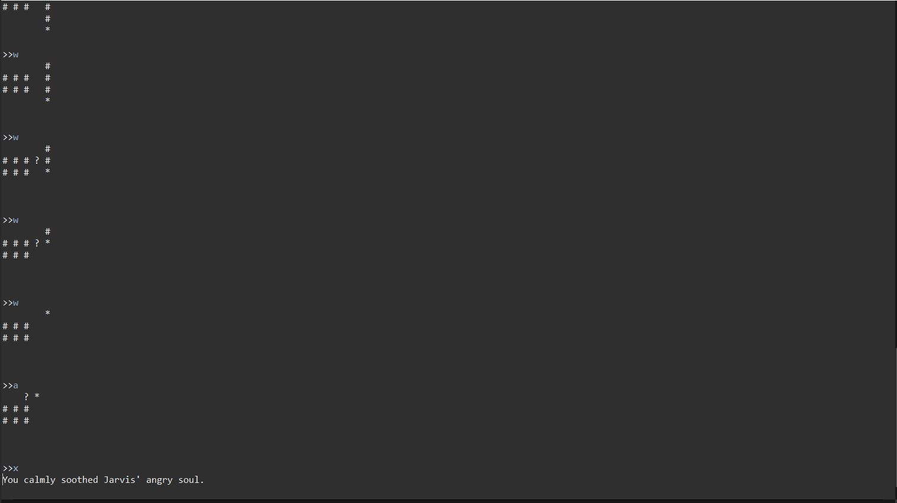
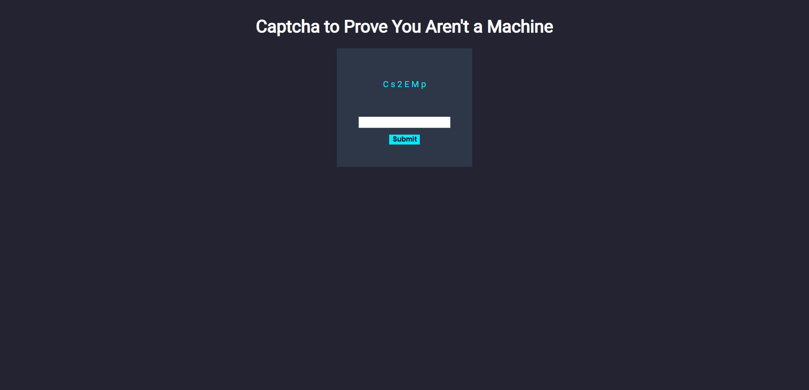
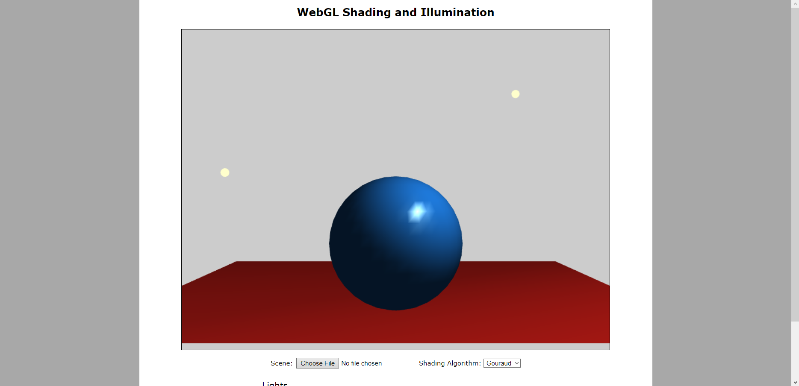

<!DOCTYPE html>
<html class="lt-ie10" lang="en">
<html class="no-js" lang="en">
    
</html>
</html>
    
<head>
    <title>Projects</title>
    <meta charset="utf-8"/>
    <meta name="viewport" content="width=device-width, initial-scale=1"/>
    <link rel="stylesheet" href="https://cdn.jsdelivr.net/npm/bootstrap@4.6.1/dist/css/bootstrap.min.css">
    <link rel="stylesheet" href="style.css">
    <script src="https://cdn.jsdelivr.net/npm/jquery@3.6.0/dist/jquery.slim.min.js"></script>
    <script src="https://cdn.jsdelivr.net/npm/popper.js@1.16.1/dist/umd/popper.min.js"></script>
    <script src="https://cdn.jsdelivr.net/npm/bootstrap@4.6.1/dist/js/bootstrap.bundle.min.js"></script>
</head>

<body>
    <div class="projects">
      <nav class="navbar navbar-expend-md bg-dark navbar-dark">
        <!-- Brand  -->
        <!-- <a class="navbar-brand" href="me.jpg">Navigation Bar</a> -->

        <!-- Toggler/Collaspible Button -->
        <button class="navbar-toggler" type="button" data-toggle="collapse" data-target="#collapsibleNavbar">
            <span class="navbar-toggler-icon"></span>
          </button>
        
          <!-- Navbar links -->
          <div class="collapse navbar-collapse" id="collapsibleNavbar">
            <ul class="navbar-nav">
              <li class="nav-item">
                <a href="index.html">Home</a>
              </li>
              <li class="nav-item">
                <a class="active" href="projects.html">Projects</a>
              </li>
              <li class="nav-item">
                <a href="resume.html">Resume</a>
              </li>
              <li class="nav-item">
                <a href="fun.html">Fun Stuff About Me</a>
              </li>
            </ul>
          </div>
        </nav>
      </nav>

      <!-- <div class="main"> -->
      <div class="banner">
        <h1 id="banner-header">Projects That I've Done</h1>
      </div>
      <h1 class="project-header">Finding Jarvis</h1>
      <p class="project-paragraphs">
        Finding Jarvis was a game that I made in CISC 230 or 231 (I forgot which class it was). But this game primarily focused on using different classes together to create this 'board' for the player and Jarvis to move around. Jarvis was able to independently move around the map and set traps for the player to step on. Throughout this, the player would have to move around the board using the "W" "A" "D" "X" keys to move up, left, right, and down in order to catch Jarvis.
      </p>
      

      <h1 class="project-header">Using Captchas as a way to get information about the User</h1>
      <p class="project-paragraphs">
        Back in Information Security, we were to make a page with a captcha. This captcha would have different characters in it. Each character would correlate to a different URL. If the user had already visited that site before, then they would not see that character. For example, the letter "C" in this photo can be the link to "Facebook.com". If the user has been there already, then the user will only see an empty spot where the "C" character should have been.
      </p>
      
      <h1 class="project-header">Project 3</h1>
      <p class="project-paragraphs" id="project-3-photo">
        I was in a computer graphics class. In one of the assignments we had, we had to create a light source and move the light source around an object. We were to understand how light would reflect based off of the object's reflectiveness and also how it would also affect shading.
      </p>
      
    </div>
    <!-- </div> -->
</body>